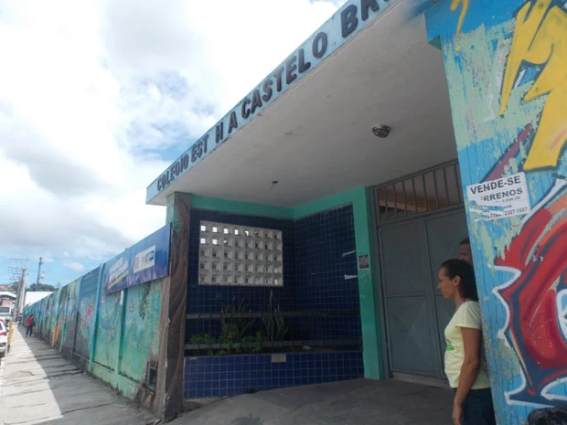
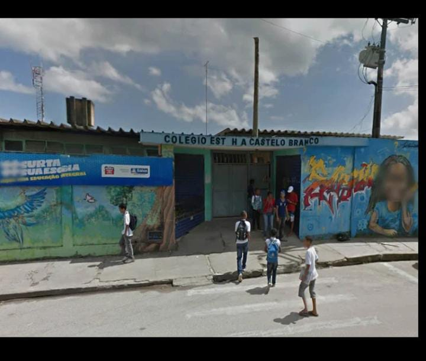
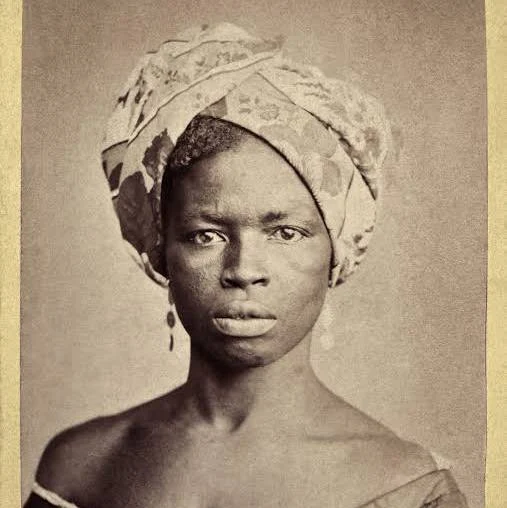
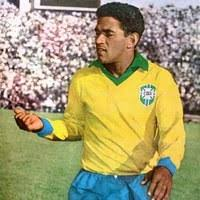
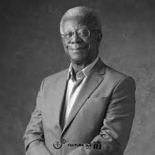
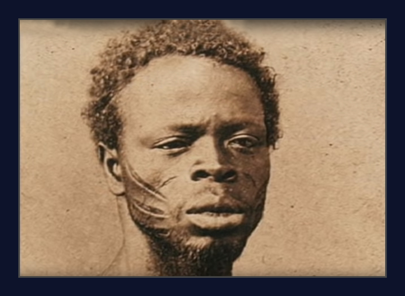
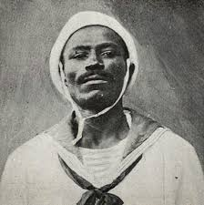
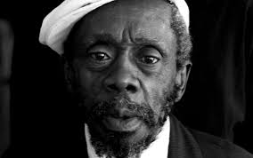

A origem e os Primeiros passos do colégio nelson Mandela
Projeto aláfia -
IIºUnidade
- Humanas
- Anthony G. B.
- Yasmin P. C.
- Gilvan R.
- Raquel C. Q.
- João V. A.
Introdução
Este trabalho tem como objetivo resgatar e preservar a memória da escola hoje conhecida como Colégio Estadual Nelson Mandela. Mais do que uma simples pesquisa, esta proposta assume o formato de um memorial virtual, funcionando como uma ponte entre o passado e o presente, para que alunos, professores e a comunidade em geral possam conhecer, valorizar e refletir sobre a trajetória da instituição.
Antes de receber o nome atual, a escola era chamada de Colégio Estadual Presidente Humberto de Alencar Castelo Branco. Sua origem está profundamente ligada aos desafios e transformações do sistema educacional público da Bahia, refletindo os contextos sociais e políticos de cada época. Entender como essa escola surgiu, quais foram os primeiros passos dados pela gestão, pelos professores e pelos alunos, é essencial para compreender sua importância na formação de gerações e no fortalecimento da educação pública local.
O memorial virtual proposto neste trabalho pretende funcionar como uma ferramenta de informação e de valorização da história escolar, reunindo relatos, imagens, registros antigos e curiosidades que contam como a escola foi crescendo, se adaptando e se transformando com o tempo. Além disso, busca explicar os motivos da escolha do nome Nelson Mandela, uma figura de luta e resistência, cujo legado inspira os princípios de igualdade, justiça e educação para todos — valores que a escola tem buscado representar. Por meio desse trabalho, espera-se despertar o interesse da comunidade escolar pela própria história e criar um espaço permanente de memória, respeito e pertencimento, mostrando que cada passo dado até aqui é parte essencial de uma caminhada maior.
A Fundação do Colégio Humberto de Alencar Castelo Branco
A fundação do Colégio Humberto de Alencar Castelo Branco está diretamente ligada ao cenário social e político do Brasil nas décadas posteriores ao regime militar. Criado em um período de grande transformação no país, o colégio nasceu da necessidade de ampliar a rede de ensino público e atender à crescente demanda por educação de qualidade em sua região.
O nome da instituição faz referência a Humberto de Alencar Castelo Branco, primeiro presidente do regime militar instaurado em 1964. A escolha do nome reflete a forte influência política da época, quando era comum batizar escolas e espaços públicos com nomes de líderes militares, em uma tentativa de reforçar ideais nacionalistas e de ordem. Assim, a escola já nasceu carregada de simbolismo e de contexto histórico.
A criação do colégio foi motivada também pela carência educacional que atingia milhares de famílias, especialmente em bairros em expansão. À medida que novas comunidades surgiam e a população aumentava, tornou-se urgente garantir acesso à escolarização básica e, mais tarde, ao ensino médio. Nesse sentido, o colégio representou um marco para a democratização do ensino, oferecendo oportunidades de aprendizado a jovens que antes precisavam se deslocar para outras localidades.
A influência de lideranças locais também teve papel decisivo em sua criação. Moradores e autoridades regionais pressionaram pelo investimento em infraestrutura educacional, defendendo que a presença de um colégio consolidado traria não apenas benefícios para os estudantes, mas também para o desenvolvimento cultural e econômico da comunidade. Dessa forma, a escola nasceu como resultado de uma mobilização que unia demandas populares e interesses políticos.
Em resumo, a fundação do Colégio Humberto de Alencar Castelo Branco foi marcada por uma combinação de fatores: a influência política do período militar, a necessidade crescente por vagas escolares, o fortalecimento do ensino público e a pressão de comunidades locais por melhores condições de educação. Esse conjunto de elementos explica por que a instituição se firmou como um marco educacional e histórico em sua localidade.
Reputação e desafios
Durante o período da ditadura militar no Brasil (1964–1985), o Colégio Estadual Presidente Humberto de Alencar Castelo Branco foi fundado em 1967 na Bahia, por meio da Portaria nº 69, e absorveu estudantes de um antigo ginásio comunitário em Periperi . A criação, ainda que atenda a demandas por educação, se deu em um contexto político marcado por autoritarismo e símbolos do regime, como o batismo da escola com o nome de um presidente militar.
Primeiros passos
A história do colégio teve início sob o nome de Colégio Estadual Castelo Branco, em um contexto marcado por mudanças no cenário educacional baiano. Fundado com o intuito de atender à crescente demanda por educação pública de qualidade na região, o colégio começou com uma estrutura simples, poucos professores e uma comunidade escolar ainda em formação.
Nos primeiros anos, o funcionamento da escola foi desafiador. Faltavam recursos, materiais e até mesmo salas adequadas para todas as turmas. Ainda assim, com o esforço de professores, funcionários e da própria comunidade, o colégio começou a firmar seu espaço, se tornando um ponto de referência educacional no bairro.
O nome Castelo Branco foi escolhido em homenagem ao ex-presidente do Brasil, que governou o país durante um período de ditadura militar. Apesar das controvérsias associadas a esse período, a escola buscou desde o início promover valores de cidadania, respeito e inclusão, preparando seus alunos para serem cidadãos críticos e conscientes.
Com o passar do tempo, a escola foi se adaptando às novas demandas e desafios, ampliando sua infraestrutura, diversificando suas atividades e se consolidando como uma instituição de ensino respeitada. A transição para o nome Nelson Mandela veio como um reconhecimento da luta por igualdade e justiça, refletindo a nova visão que a escola queria adotar, inspirando seus alunos a serem agentes de mudança na sociedade.
Muitos dos educadores que passaram pelos primeiros anos da escola deixaram marcas profundas na memória dos alunos. Suas práticas pedagógicas e o cuidado com a formação humana e cidadã foram fundamentais para construir a identidade do colégio.
Ao longo do tempo, o número de alunos foi crescendo, e a escola passou por reformas e adaptações para acompanhar a nova realidade. Essa fase inicial, apesar das limitações, foi crucial para estabelecer os alicerces de uma instituição que viria a se transformar e a ser renomeada em homenagem a uma das figuras mais importantes da luta por igualdade e justiça no mundo: Nelson Mandela.
Homenagens

O Colégio Estadual Nelson Mandela homenageia, em seus espaços, figuras históricas que marcaram o Brasil com suas lutas, talentos e contribuições sociais. Cada nome presente nos corredores, salas e ambientes da escola representa uma trajetória de resistência, superação ou impacto cultural. Essas homenagens têm o objetivo de valorizar a memória coletiva e inspirar os estudantes a reconhecerem a força da história em seu cotidiano.
-
Nelson Mandela
Nelson Mandela foi um líder sul-africano que se tornou símbolo mundial da luta contra o racismo e a desigualdade. Após passar 27 anos preso por enfrentar o regime do apartheid, foi eleito o primeiro presidente negro da África do Sul e defendeu a reconciliação e a paz. Ao dar nome ao colégio, sua figura representa os ideais de justiça, respeito às diferenças e transformação por meio da educação.
-

Maria Filipa
Maria Felipa foi uma mulher negra e marisqueira que participou ativamente das lutas pela Independência da Bahia, enfrentando tropas portuguesas com coragem e liderança. No colégio, seu nome dá vida a um dos corredores principais, homenageando sua força e papel histórico na resistência popular baiana.
-

Mané Garrincha
Garrincha foi um dos maiores jogadores da história do futebol brasileiro, conhecido por sua habilidade, alegria em campo e origem humilde. No colégio, seu nome batiza a quadra esportiva, reconhecendo seu legado no esporte e a inspiração que oferece aos jovens.
-

Carolina de Jesus
Escritora e catadora de papel, Carolina de Jesus retratou com profundidade a vida nas favelas brasileiras por meio de seus diários. Seu nome foi escolhido para a sala de leitura do colégio, valorizando a literatura como forma de resistência e expressão social.
-

Milton Gonçalves
Milton Gonçalves foi um ator e diretor pioneiro na televisão brasileira, além de militante pelos direitos da população negra. No colégio, ele é lembrado na sala de artes, celebrando sua contribuição para a cultura e a representatividade.
-

Zumbi dos Palmares
Zumbi liderou o Quilombo dos Palmares e simboliza a luta contra a escravidão no Brasil. No colégio, seu nome está presente em um dos corredores, reforçando a importância da resistência e da identidade negra na formação dos estudantes.
-

João Candido
Conhecido como o Almirante Negro, João Cândido liderou a Revolta da Chibata contra os castigos físicos na Marinha brasileira. Ele é homenageado na sala de história do colégio, onde seu exemplo inspira a reflexão sobre justiça e dignidade.
-

Grande Otelo
Ator, comediante e cantor, Grande Otelo marcou o cinema e o teatro brasileiros com seu talento e carisma, enfrentando o racismo com arte. No colégio, seu nome dá título ao espaço cultural, reconhecendo sua importância na construção da identidade artística nacional.